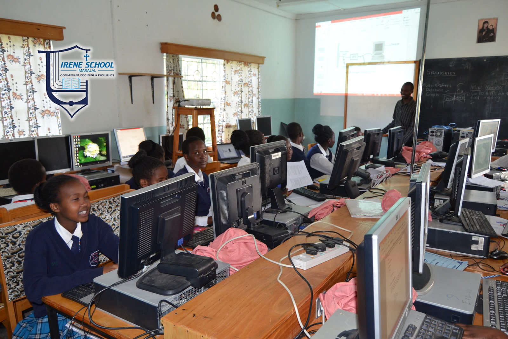
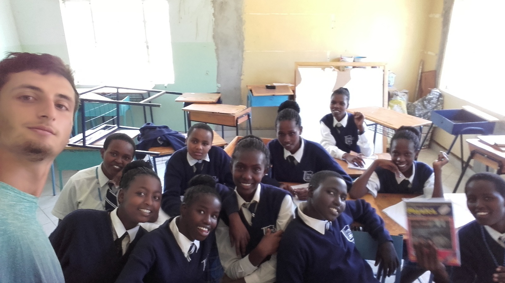

Ein selbstständiges Schulmodell
Das Ziel unseres Projektes ist die Schaffung eines selbstständigen Schulmodells, das sich den sozial-ökonomischen und kulturellen Umständen des Samburu County anpasst. Ein Modell, das in der Region, in Kenya und potenziell in allen Ländern wo es hilfreich sein könnte, mit manchen Anpassungen reproduziert werden kann. Der Startpunkt dieser Art von Projekten ist vor Ort mit den Menschen, die dort geboren und aufgewachsen sind und autonom Bildungsprojekte entwickelt haben, um Bildung erschwinglischer und zugänglicher für alle zu gestalten, zu arbeiten. Diese müssen auch die Motivation und Entschlossenheit mitbringen, um diese Projekte und Ihre Ziele unermüdlich zu verfolgen. Menschen wie Brother Peter Musau, der als Direktor der Irene Girls Secundary School Maralal 2017 diese eröffnete und der davon überzeugt ist, dass nur durch die Bildung der Mädchen und jungen Frauen, es möglich ist Sachen wie FGM, die weibliche genitale Verstümmelung, und die Verbreitung von HIV zu stoppen. Er hat entschieden sein Leben den jungen Frauen zu widmen die trotz sehr guter akademischer Leistungen und großer Motivation, wegen den Traditionen, der Armut und den Ungerechtigkeiten des Systems keine Chance haben.
Die Irene School ist eine Internatsschule, in der die Schülerinnen nur wehrend der Ferien nach Hause fahren. Bei der Eröffnung im Jahre 2017, hatte die Schule die notwendige Infrastruktur um 300 Studenteninnen zu beherbergen, Klassenräume und genügend Grünfläche. Es wurden Schweine und Kühe gezüchtet und durch einen kleinen Garten war es möglich zumindest teilweiße selbst Gemüse zu produzieren. Es wurde klar, dass die Mangementkosten, um die Schule am Laufen zu halten, zu hoch waren, um alle Lehrenden zu entlohnen und die externen Spenden zu niedrig und inkonstant. Um die hohen akademischen Standards gewehrleisten zu können, entschied der Direktor auch 50 Mädchen zuzulassen, die gute Schulergebnisse hatten, dessen Eltern in der Lage waren selber die Schulgebühren in höhe von 600 € pro Jahr zu bezahlen. Dieses Geld war nötig, um die Lebensmittel für die Mädchen und deren Lehrern zu besorgen und letzeren ihren Gehalt bezahlen zu können. Es war aber auch genug um zehn weiteren Mädchen, die herausragende Ergebnisse erzielt hatten, einen Schulplatz zu bieten. Dieses Schema wurde auch in den folgenden Jahren benutzt und jetzt ist die Anzahl der Schülerinnen auf 310 gestiegen, von denen 40 von der Schule und verschiedenen NGOs gesponsert werden. Mittlerweile werden 25 Mädchen von STORM Project unterstützt. Die wirkliche Anzahl geförderter Mädchen ist sogar höher, und umfasst fast ca. 50% der Lernenden, weil ihre Eltern nicht immer oder nur teilweise die Schulgebühren bezahlen können, wegen der instabilen ökonomischen Lage und der niedrigen Einkommen in der Region.
Das Ziel ist es eines Tages alle Mädchen die in der Irene School eingeschrieben sind fördern zu können und derweil die gute Qualität der Bildung und eine optimale Lernumgebung zu gewährleisten. Wir wollen die Mädchen auch nachdem sie die Schule verlassen weiter unterstützen, ihnen helfen an der Universität angenommen zu werden und ihre Ziele und Träume zu verwirklichen. Wir hoffen von ganzem Herzen, dass sie eines Tages in der Lage sein werden diese Art von Bildung ihren Kindern und so vielen Kindern wie möglich ermöglichen zu können Das würde zu einer allmählichen Selbstständigkeit der Schule und der sich um sie bildenden Gemeinschaft führen, und uns die Möglichkeit geben uns anderen Schulen widmen zu können.

Patenschaften
Die Patenschaften so vieler Schülerinnen wie nur möglich ist besonders in dieser frühen Phase des Projektes wichtig, um eine solide Basis für die weitere Entwicklung zu bilden. Wir wollen den motiviertesten und besten Mädchen beistehen, die nach Kolloquien und Konsultationen mit den Lehrern und Eltern ausgewählt wurden und die ansonsten keine Möglichkeit haben würden eine Schule zu besuchen und gezwungen wären mit 12 oder 13 Jahren zu heiraten. Wir wollen ihnen die Möglichkeit geben ihre Träumen, die wir in ihren Augen sehen, nachzugehen und sie zu verwirklichen. Um das zu machen übernehmen wir für die Mädchen die gesamten Schulkosten, inklusive der Schulgebühren, Uniformen und Schulmaterial, mit der einzigen Bedingung dass sie weiterhin gute Leistungen erbringen. 2018 haben wir mit 3 Mädchen angefangen, 2019 wurden es 6 und 2020 kamen 16 weitere dazu, die wir 2021 weiterhin fördern konnten. In diesem neuen Jahr, mit Deiner Hilfe, hoffen wir einen neuen Höchstwert zu erreichen!!
Schulmaterial
Das Schulmaterial, das den Schülerinnen im ersten Jahr gegeben wird, beinhaltet drei Stifte, zwei Häfte für jedes Fach, zwei Bleistifte, ein Lineal und ein Buch, dass sich drei Schülerinnen in jedem Fach, teilen. Das ist das Maximum, was die Schule mit ihren limitierten Ressourcen bereitstellen kann. Unsere Aktivität konzentriert sich auf die Lösung zweier Probleme: Es gibt nicht genug Bücher, damit jede Schülerinn ihr eigenes hat, und den gegenwärtigen Mangel, den Schülerinnen die nötigen digitalen Kompetenzen mitzugeben, die in der globalisierten und kompetitiven Arbeitswelt immer wichtiger werden. Deshalb haben wir zusammen mit den Lehrern der Irene School einen Projektantrag geschrieben, um 4000 Bücher und 10 Computer zu kaufen. Die Bücher würden den Schülerinnen gegeben werden und wieder genutzt werden. Die Computer würden in den Computer Science und Mathemathik Unterricht integriert werden, um das anzuwenden, was bisher im frontalen Unterricht gelehrt wird.


Zukunftige Projekte
In den nächsten Jahren möchten wir unsere Arbeit mit der Irene-School bestmöglich weiterentwickeln, damit wir die Erfahrungen, die gesammelt wurden , in anderen Umgebungen und Bedingungen, in Kenia sowie in anderen Ländern Afrikas und im Rest der Welt nutzen können . Wir sind jung, ehrgeizig und entschlossen und werden nicht so einfach aufgeben, aber um erfolgreich zu sein, brauchen wir Eure Hilfe. Kontaktiere uns für Vorschläge oder Ideen, um unsere Arbeit zu verbessern und Spenden zu sammeln. Helfe uns mit Deinen Fähigkeiten und Deiner Zeit. Schreibe uns einfach! Wir warten auf Dich!